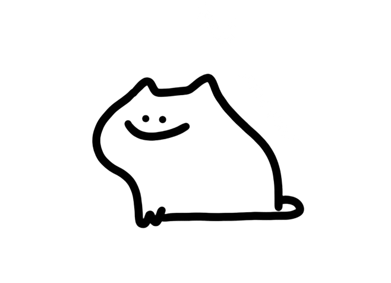
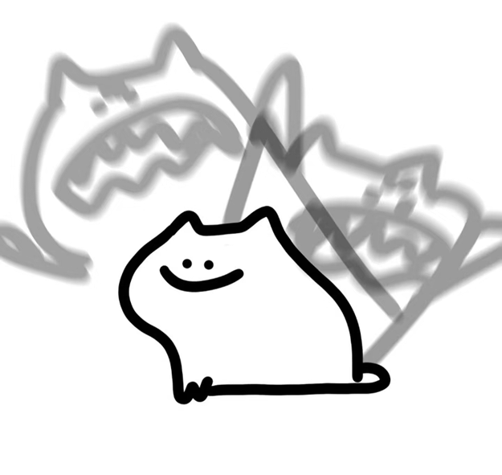

Entertainment Design @ Creative Direction by Evelyn-2025
Small compilation of unposted works, some course work... some personal work.
COPYRIGHT @ Evelyn 2025
I AM FINE.
静
EVELYN 'S
 
0%
PORTFOLIO
CLICK TO GET CRAZY!